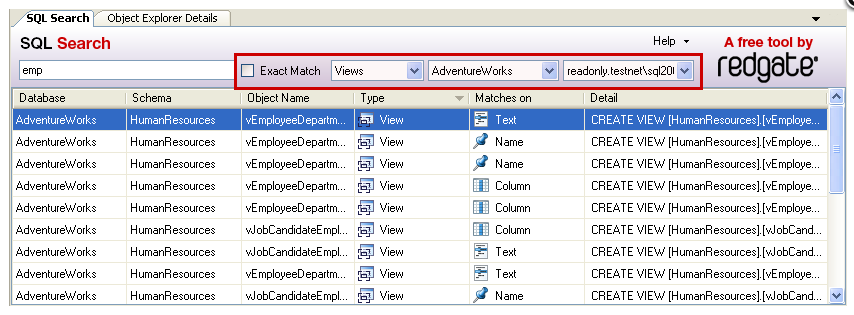
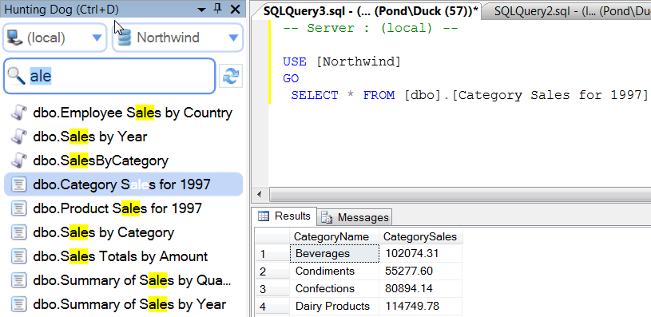
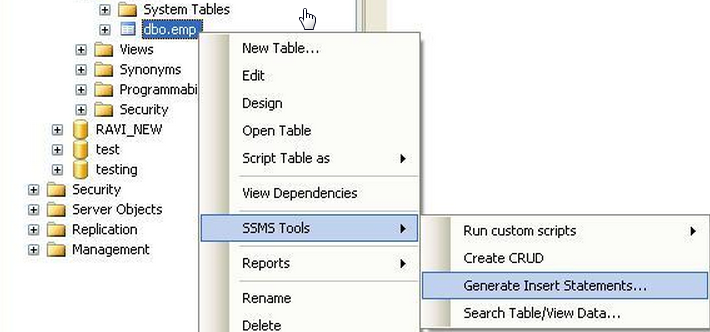
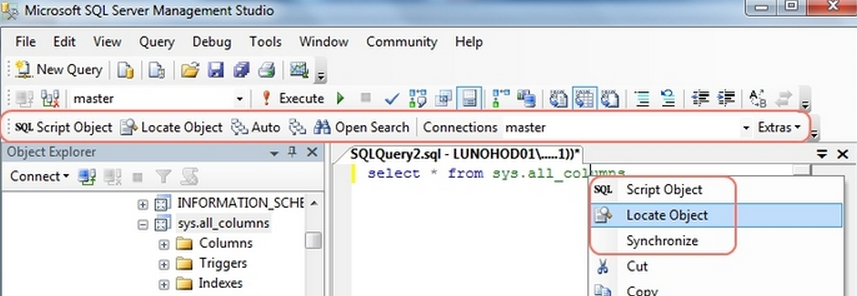

5 Best Free SQL Server tools - review
Red Gate SQL Search
This Free SQL Server tool for comprehensive search throughout the SQL Server.
- If you want to know all places where specific column of the table is used - this is a great tool to use.
- If you want to know table or stored procedure dependencies - this is a good tool to use.
Red Gate SQL Search a good free tool and supports SQL Server Management studio 2005, 2008 and 2012.

For full list of feature and to download Free Red Gate SQL Search Tool: http://www.red-gate.com/products/sql-development/sql-search/
SQL Hunting Dog
SQL Hunting Dog is a free SQL Server tool.
It works in SQL Server Management Studio 2008 and 2012.
It helps user to find object and do all actions which usually SQL Developer or DBA does when he develops the code.
The main idea was to increase productivity and make SQL Server Management Studio easy to work with , especially if you have hundreds of tables and stored procedures inside production database.
- Find object and shows result as you type
- Inspect procedure body or table data with a single click
- Incredibly fast and smooth operation - user experience was number one priority with tool was developer.

To find out more about all feature see www.sql-hunting-dog/how
SSMS Toolpack
This free SQL Server tool has been around for years. SSMSToolpack is free for SQL 2008, however if you want to use it for SQL Server 2012 you will need to buy a license. It is filled with useful feature but the main features I use a lot were:
- SQL Formatting
- Insert Statement generator
- Window Connection colouring

For full list of feature of SSMS Toolpack please see http://www.ssmstoolspack.com/Features
SSMS Boost
SSMSBoost is a free SQL Server Management Studio addin. It has tons of different features and it even got SQL Server Community Bronze award in 2012. This SQL Server tool includes the following feature:
- SQL execution query history and auto recovery
- Script SQL Object
- Format SQL code
- Search all objects in SQL Server database using a wildcard

For more information visit SSMSBoost website: http://www.ssmsboost.com/
dbForge SQL Complete
If you have SQL Server 2005 and you don't have intellisense this tool is a must have. dbForge SQL Complete has a free edition and it does its job - giving you code completion and formatting. You should consider dbForge as alternative to Red Gate SQL Prompt if you don't want to pay for license but still want some basic auto complete and intellisense functionality in SQL Server Management Studio.

To see what else it can do and to get a free copy go to: http://www.devart.com/dbforge/sql/sqlcomplete/